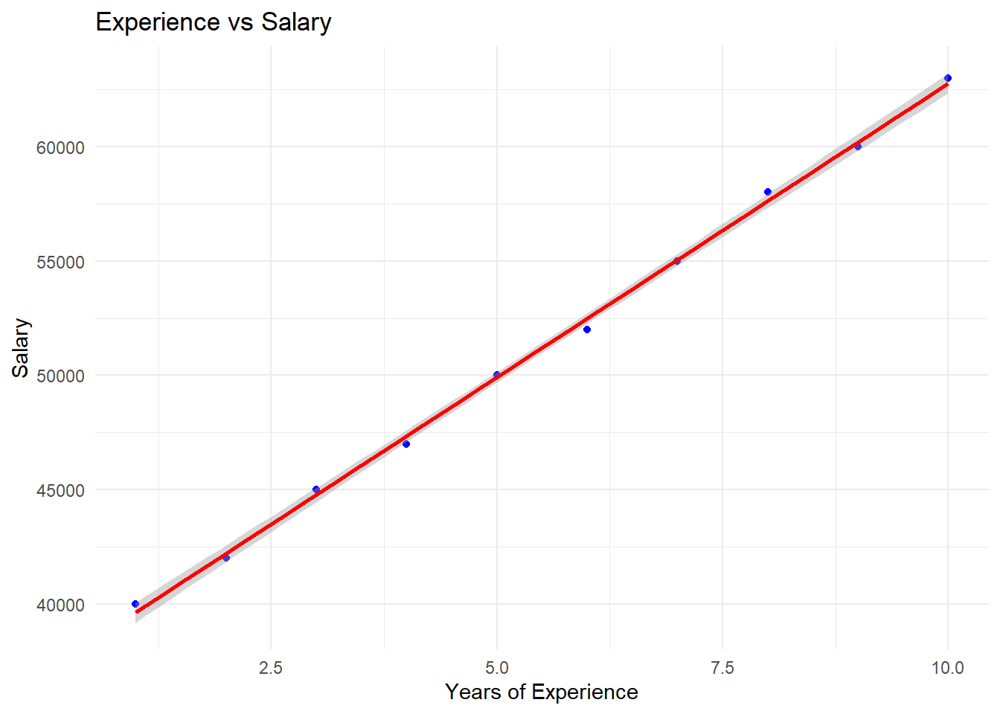

Statistical Computing
2025-02-09
Chapter 1 Reviews
1.1 Data Types and Structures
1.1.1 Data Types
There are different kinds of values in R that can be manipulated in variables. They most commonly used are; strings, numerics(integers and floats) and boolean values. The function class can be used to find the data type.
Try it!
Before diving deep into data types, lets create a value with a random value for instance age and finds its data type.
## [1] "numeric"The age is a "numeric" data type variable, interesting?
Lets explore different data types and their examples;
- Integers: These are whole numbers without dev=cimal point(e.g., 10, -5). In R, it is specified with the
Lsuffix like10L. - Floats: These are numbers with decimal points(e.g. 3.14, -2.718). R refers them as numerics.
- Boolean(Logical): True or False values, represented as
TRUEorFALSEin R. They are crucial in conditional statements. - Strings(Character): These are text values enclosed in quotes(e.g.
"Hello world", names like"John", "Mustafa", "Patel", variable names like"age", "gender", "salary")
You will often deal with mixed data types when analyzing real-world data sets therefore understanding these will help you handles any data set!
Examples
Lets have some fun! We will create different variables and find their data types;
age <- 34L
## [1] "integer"weight <- 68.2
## [1] "numeric"name <- "Mustafa"
## [1] "character"is_winter <- FALSE
## [1] "logical"You see how simple it is to find the data type of different variables in R! Remember the class function returns any number whether with decimal or whole as "numeric". It only returns "integer" when there is a suffix L.
Practical Exercise
Try out the practical exercise below to test your understanding in data types
- Find the data type of
98.03usingclass()function. - Assign the value
98.03to variableheightand find data type of height. - There are 27 goats in a field, assign the quantity of goats to a variable
goatsand find the data type of the variablegoats. Remember to add suffixLto the value27. - Find the data type of the value
"school"using theclass()function. - Assign your first name to a variable
firstnameand find its data type. Remember to enclose it in quotation marks - Create a variable
is_studentand assign it the valueTRUE. Use theclass()function to find its data type.
Solution
________________________________________________________________________________
1.1.2 Data Structures
This is the organization of data into or multiple data values in specific structures, they include vectors, matrix and data frames. Lets explore the mentioned data structures and their examples;
- Vector: This is a sequence of elements of the same data types(e.g., `
c(1, 2, 3)is a numeric vector) - Matrix: This is a two-dimensional data structure with rows and columns, where all elements are of the same type(e.g. numbers).
- Data Frames: This is the most common R data structure for handling tabular data(like an excel sheet). A data frame can contain different data types in each column unlike matrices and vectors.
Data frames are central to real-world data analysis. You will work with them to analyze, transform, and visualize data sets, whether you are calculating averages or identifying trends. The is.vector, is.matrix and is.data.frame functions are used to confirm if the variable in question is a vector, matrix or data frame respectively.
Examples
Lets have some fun! We will create different data structures and find their data types:
- Create a vector,
marksto store the values,23, 67, 98, 34, 98, 21. Print the vector to the console and useis.vectorfunction to confirm if its a actually a vector.
## [1] 23 67 98 34 98 21## [1] TRUE- Create a matrix with values from 1 to 9 and use the
is.matrixfunction to find to confirm if its really a matrix.
vector1 = seq(1, 9)
# Convert to matrix
## create by column
m1=matrix(vector1, ncol=3)
print(m1) # print the matrix to the console ## [,1] [,2] [,3]
## [1,] 1 4 7
## [2,] 2 5 8
## [3,] 3 6 9## [1] TRUE- Create a
data.framefrom the above matrix. Add the column names as"A", "B", "C". Confirm if its really a matrix.
var_names <- c("A", "B", "C") # vector to store variable names
m1_df <- data.frame(var_names, m1) # create the data frame
print(m1_df) #print to the console ## var_names X1 X2 X3
## 1 A 1 4 7
## 2 B 2 5 8
## 3 C 3 6 9## [1] TRUEPractical Exercise
Try out the exercise below to test your understanding in R data structures;
- Create a vector named
heightwith the values120.1, 118, 123.4, 130.8, 115.2. Use theis.vectorto confirm that the created variable is a vector. - Use
length()function to count the number of elements in the vector. - Create a matrix
m1from the vectorv1wherev1 <- seq(1, 12)with three columns. Use theis.matrixfunction to confirm if the said variable is a matrix. - Access the third column by running the command
m1[, 3]. - Access the second row by running the command
m1[2,]. - Create a data frame
students_dfwith the columns"Name","Age", and"Marks"for three students. WhereName <- c("Pragya", "Thomas", "Ali"),Age <- c(21, 19, 23)andMarks <- c(68, 72, 67).
Solution
________________________________________________________________________________
1.2 Data Importing and Exporting
Importing and exporting data is the foundation of data analysis workflows. The main two types of data files used are CSV and excel files.
- CSV Files: R can easily import CSV files using
read.csv("filename.csv"). The CSV is one of the most common formats you will encounter. - Excel Files: For excel files, you can use the
readxlpackage with the functionread_excel.
Try it:
Let’s have some fun by importing;
- From CSV file
## X V1 V2 V3
## 1 1 1 5 9
## 2 2 2 6 10
## 3 3 3 7 11
## 4 4 4 8 12- From Excel file
library(readxl)
students_imported <- read_excel("data/students.xlsx") # Import the data
students_imported # Display the data## # A tibble: 3 × 3
## Name Age Marks
## <chr> <dbl> <dbl>
## 1 Pragya 21 68
## 2 Thomas 19 72
## 3 Ali 23 67After data wrangling, manipulation and processing, the end product(processed data) can be saved for further use. The data can also be shared to others. Lets explore how export the CSV and Excel files
- To CSV: You can save your data to CSV format using
write.csv(data, "filepath.csv"). - To Excel To write to Excel, you can use
write.xlsx(data, "filepath.xlsx")from theopenxlsxpackage.
Try it:
Lets export the previously imported data set locally
- To CSV
- Excel File
1.3 Data Cleaning
Before you analyze data, it is crucial to ensure that it is clean. Here are some common issues in data cleaning;
- Null Values: Missing data can distort your analysis. Functions like
is.na()andna.omit()are used to detect and remove null values respectively. Null values can also be imputed by filling the missing values with the most relevant value for instance mean, mode or median of the variable, zero, or any dedicated value. - Duplicated Records: Duplicates can cause bias in results and they can detected using the
duplicated()function. This duplicated records can be removed byunique()function from R ordistinct()fromdplyrpackage. - Outliers: These are extreme values that don’t follow the general trend. The use of summary statistics(specifically IQR) and boxplots can be used to cap these values based on the context.
Data cleaning is like polishing a diamond-it ensures the data is ready for analysis, free from distortions like missing values or outliers that can skew your insights.
Try it:
Lets have some fan! We will create a random data set, identify all data issues and address them by cleaning.
- Create a sample data set
# Create a dataset
set.seed(42)
df <- data.frame(
Product = c('Shoes', 'Laptop', 'Watch', 'Phone', 'Shoes', 'Watch', 'Laptop', 'Shoes', 'Laptop', 'Phone'),
Sales = c(150, 500, NA, 300, 150, 1000, 500, 150, 500, 300), # Outlier in Sales (1000)
Category = c('Fashion', 'Tech', 'Fashion', 'Tech', 'Fashion', 'Fashion', 'Tech', 'Fashion', 'Tech', 'Tech'),
Discount = c(10, 0, 20, 5, 10, 20, 0, 10, 0, 5),
Returns = c(2, 0, 1, 0, 2, 1, 0, 2, 0, 0),
Profit = c(30, 100, NA, 70, 30, 500, 100, 30, 100, 70) # Outlier in Profit (500)
)
# Add duplicated rows
df <- rbind(df, df[2:3, ])
# View the dataset
head(df)## Product Sales Category Discount Returns Profit
## 1 Shoes 150 Fashion 10 2 30
## 2 Laptop 500 Tech 0 0 100
## 3 Watch NA Fashion 20 1 NA
## 4 Phone 300 Tech 5 0 70
## 5 Shoes 150 Fashion 10 2 30
## 6 Watch 1000 Fashion 20 1 500- Count the null values
## [1] 4- There are 4 null values in the data set. Let’s handle the null values by filling them with mean of the respective variables.
# Fill missing Sales and Profit with the mean of the respective columns
df$Sales[is.na(df$Sales)] <- mean(df$Sales, na.rm = TRUE)
df$Profit[is.na(df$Profit)] <- mean(df$Profit, na.rm = TRUE)
# View the data set after handling null values
head(df)## Product Sales Category Discount Returns Profit
## 1 Shoes 150 Fashion 10 2 30
## 2 Laptop 500 Tech 0 0 100
## 3 Watch 405 Fashion 20 1 113
## 4 Phone 300 Tech 5 0 70
## 5 Shoes 150 Fashion 10 2 30
## 6 Watch 1000 Fashion 20 1 500## [1] 0- The null values are now filled and the data set is complete. Let’s find if there exists some duplicated records and how many are they?
## [1] 7## [1] 12 6- There are 7 duplicated rows. We will remove the duplicated records and retain only one row of the same kind. This can be achieved using
unique()from base R ordistinct()fromdplyrpackage. In this case we will be using thedistinctcommand.
# Load the required libraries
library(dplyr)
# Remove duplicated rows
df_cleaned <- df %>% distinct()
# Count the duplicated records
sum(duplicated(df_cleaned))## [1] 0## [1] 5 6- The data has no duplicated records and it is evident that 7 records(duplicated) were deleted. They are only 5 rows remaining. The last step of data cleaning in this case is to identify outliers in the
SalesandProfit, and remove them using the IQR method.
# Use the IQR method to detect outliers in Sales and Profit
Q1_sales <- quantile(df_cleaned$Sales, 0.25)
Q3_sales <- quantile(df_cleaned$Sales, 0.75)
IQR_sales <- Q3_sales - Q1_sales
Q1_profit <- quantile(df_cleaned$Profit, 0.25)
Q3_profit <- quantile(df_cleaned$Profit, 0.75)
IQR_profit <- Q3_profit - Q1_profit
# Filter out outliers
df_cleaned <- df_cleaned %>%
filter(!(Sales < (Q1_sales - 1.5 * IQR_sales) | Sales > (Q3_sales + 1.5 * IQR_sales))) %>%
filter(!(Profit < (Q1_profit - 1.5 * IQR_profit) | Profit > (Q3_profit + 1.5 * IQR_profit)))
# Find out how many records were affected
dim(df_cleaned)## [1] 4 6- Only one row had outliers and was removed. The data is now clean and ready for further analysis.
1.4 Data Visualization
Data visualization is the representation of data through use of common graphics, such as charts, plots, infographics and even animations. In this course we will use the famous ggplot2 library to create charts and graphs. ggplot is one of the most popular and flexible data visualization libraries in R. It follows the grammar of graphics philosophy, allowing you to build plots in layers. Here are some of the basic plots in data visualization;
- Scatter Plots: used to visualize the relationship between two variables in R.
- Bar Charts: used to compare categorical data.
- Histograms: used to represent distribution of a single continuous variable.
Visualizations are powerful tools that help you see patterns and insights that raw data might hide. A well-made plot can communicate your findings more effectively than numbers alone.
Try it:
Lets use the above data set that we cleaned to plot simple charts in R using ggplot library.
- Install the package if not installed
install.packages("ggplot2")- Load the library
There are 5 key steps in plotting in ggplot;
- The Setup - Read the data set, define x and y axis.
ggplot(data, aes(x, y))+... - The Labels - Title, X and Y axis labels.
... + labs(xlab=, ylab=, title=) + ... - The Theme - Default, Black and White, colored etc.
....+ <theme_type>.. - The Facets - Individual Graphs for each group in data with exactly same range
- The Layers or geoms - The actual plot type - e.g Bar plot, Box plot, Violin plot etc.
...+ geom_bar() + ...for bar chart,...+ geom_point() + ...for scatter plot etc.
Lets explore how to create a basic chart using ggplot2 library in R. We will create a sample student data set that we will use to visualize data in R.
Create the data set
library(dplyr)
# Sample data for students
set.seed(27)
students_df <- data.frame(
student_id = 1:100,
score = sample(50:100, 100, replace = TRUE),
study_hours = sample(5:30, 100, replace = TRUE),
gender = sample(c("Male", "Female"), 100, replace = TRUE),
grade = sample(c("Freshman", "Sophomore", "Junior", "Senior"), 100, replace = TRUE)
)
head(students_df)## student_id score study_hours gender grade
## 1 1 54 10 Male Freshman
## 2 2 99 8 Male Junior
## 3 3 58 21 Male Senior
## 4 4 89 13 Male Junior
## 5 5 68 23 Female Freshman
## 6 6 65 10 Female JuniorPlot the charts;
Scatter plot
We will plot to show the relationship between study hours and scores where scores is assumed to depend on study hours. Therefore scores will be on the y-axis and the study hours will be at the x-axis.
# The set up
ggplot(data = students_df,
aes(x = study_hours, y = score)) +
# The geoms - for scatter plot
geom_point() +
# Labels
labs(
title = "Study hours vs scores",
x = "Weekly study hours",
y = "Scores"
) +
# Theme
theme_classic()
From the chart, study hours per week does not have an effect of the score - remember this is randomly generated data set.
Bar Chart
We will find the count of students in each grade level
ggplot(data = students_df,
aes(x=grade)) +
geom_bar() +
labs(
title = "Students by grade level",
x = "Grade level",
y = "Number of Students"
) +
theme_minimal()
The Senior grade has the fewest students while the Sophomore grade takes the lead in the student population.
Pie Chart
We will plot the gender distribution of students on a pie chart to show the proportion of male and female students.
# Load required libraries
library(ggplot2)
library(dplyr)
# Ensure `gender` column is recognized
students_df$gender <- as.factor(students_df$gender)
# Count gender distribution
gender_count <- dplyr::count(students_df, gender)
# Create Pie Chart
ggplot(data = gender_count, aes(x = "", y = n, fill = gender)) +
geom_bar(stat = "identity", width = 1) +
coord_polar("y") +
labs(
title = "Gender Distribution of Students",
fill = "Gender"
) +
theme_classic() +
theme(
plot.title = element_text(hjust = 0.5),
axis.title = element_blank(),
axis.text = element_blank(),
panel.grid = element_blank()
)
From the pie chart, most students in the school are females.
Histogram
Finally we will plot a histogram to plot the distribution of scores.
ggplot(data = students_df,
aes(x=score)) +
geom_histogram() +
labs(
title = "Students' scores distribution",
x = "Score",
y = "Count of students"
) +
theme_minimal()## `stat_bin()` using `bins = 30`. Pick better value with `binwidth`.1.5 Hands-on Exercises
You will be required to work with a randomly generated patients data. Here are the steps to take to work on this exercise;
- You will run the code below to generate the data set.
# Set seed for reproducibility
set.seed(71)
# Generate the data set
patients_data <- data.frame(
patient_id = 1:1000,
age = sample(20:80, 1000, replace = TRUE),
height_cm = rnorm(1000, mean = 165, sd=10),
weight_kg = runif(1000, min=50, max=135),
gender = sample(c("Male", "Female"), 1000, replace = TRUE),
condition = sample(c("Hypertension", "Malaria", "Pneumonia", "Diabetes",
"Asthma", "Healthy"), 1000, replace=TRUE)
)
head(patients_data)## patient_id age height_cm weight_kg gender condition
## 1 1 78 177.6077 108.48587 Female Diabetes
## 2 2 47 146.4456 130.03183 Female Healthy
## 3 3 34 158.7752 61.70929 Female Malaria
## 4 4 67 146.2848 114.83419 Female Asthma
## 5 5 65 146.6927 86.65565 Male Hypertension
## 6 6 20 155.5785 74.65025 Male HealthyYou will use the patients_data to answer the questions below;
- Identify the data types for each column using the
str()function. - Find the shape of the data set using the
dimfunction. - Save the
patients_datato CSV and name the filepatients_data.csv. - Import the saved data set as
patients_df. - Using the imported data set,
patients_df, create the following charts.
- Plot a histogram to show the distribution of height.
- Create a bar chart to compare the number of male and female patients.
- Use a pie chart to show the composition of different health conditions.
- Plot a scatter plot to show the relationship between age and weight.
Solution
________________________________________________________________________________